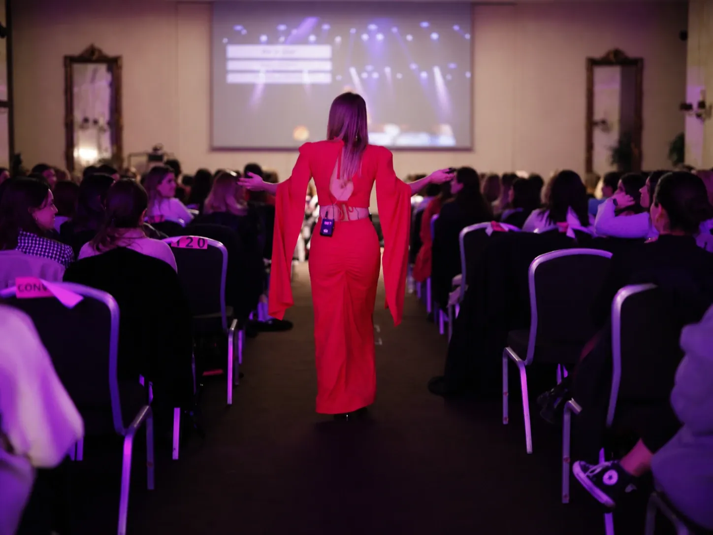

Método LIV: Liberdade, Identidade e Valor
A tua prosperidade nunca vai além de quem acreditas ser.
Dois dias com a Mafalda Almeida para descobrires quem és e prosperares na vida e nos negócios.
Evento presencial · Local a anunciar
O Método LIV
A prosperidade começa em quem és.
Quase nunca é falta de esforço, é a imagem que tens de ti a decidir até onde vais.
- L
Liberdade
Voltas a escolher a vida e o negócio que queres.
- I
Identidade
Descobres quem és e o padrão que te mantém no mesmo patamar.
- V
Valor
Reconheces o teu valor e passas a cobrá-lo.

O que levas destes dois dias
O padrão que te tem segurado, identificado e com nome.
Uma relação nova com o teu valor e com o dinheiro que deixas entrar na tua vida.
Clareza e coragem para as próximas decisões, na vida e nos negócios.
27 e 28 de fevereiro de 2027 · Lugares limitados.

Quem te conduz
Mafalda Almeida.
«Ajudo pessoas e empresas poderosas a recordar o quão poderosas são.»
Mentora, coach executiva e analista comportamental, ajuda mulheres e empresas a liderar com presença, confiança e resultados.
ForbesRTPSIC InternacionalLuxwomanJN
Inscrição · 27 e 28 de fevereiro de 2027
O teu próximo patamar começa em fevereiro.
Ao longo dos anos acompanhei mulheres com tudo para crescer que continuavam a viver abaixo do que valem, e quase nunca era falta de competência. Nestes dois dias quero que vejas em ti o que eu já vejo, e que saias de lá com coragem para o assumir.
Mafalda
Bilhete
PENDENTE
- Dois dias presenciais com a Mafalda Almeida
- O Método LIV completo: Liberdade, Identidade e Valor
- Local a anunciar
Lugares limitados.